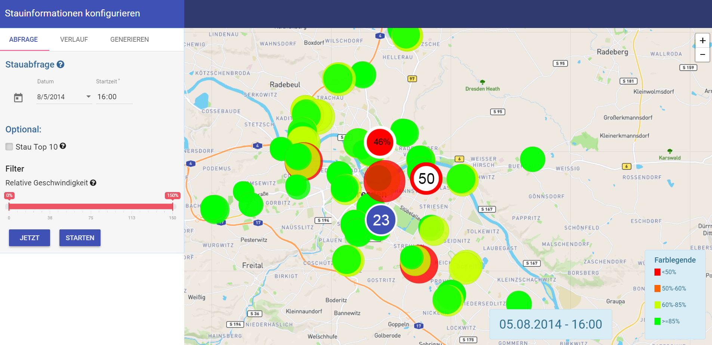

MAGDa - Management und Analyse Geotemporaler Daten
Ein Stauatlas für Dresden
Posted am 27.07.2017Im Rahmen des Studienganges Medieninformatik an der Beuth Hochschule für Technik entwickelten die Studierenden Tom Schilling, Luise Napieralski, Alexander Hans, Jasmin Mayrowski und Romano Waschewski eine Webanwendung zur Verkehrsanalyse der Stadt Dresden.
Das Problem
Das Thema Stau, gerade im Zusammenhang mit dem Berufsverkehr, ist in vielen Städten ein großes Problem. Entscheidende Verkehrsknotenpunkte werden zu den Hauptverkehrszeiten hin stark belastet. Gerade Ortsdurchfahrten die zur Innenstadt führen oder Flussüberquerungen sind davon oft betroffen. Für Stadtplaner ist es daher eine wichtige Aufgabe, solche Knotenpunkte bei der Planung frühzeitig zu identifizieren und alternative Entlastungsstraßen einzuplanen. Um festzustellen, an welchen Standorten dies genau Sinn macht, muss der Verkehr hinsichtlich der Verkehrsdichte und der gefahrenen Geschwindigkeiten analysiert werden. Ziel dieses Projektes ist es, einen Stauatlas von der Stadt Dresden für Stadtplaner, -verwaltung und Einwohner zu entwickeln. Im Mittelpunkt steht die Auswertung der Sensordaten und deren Visualisierung, mit der sich ermitteln lässt, zu welchem Zeitpunkt, an welchen Stellen Verkehrsprobleme auftraten und wo Optimierungspotential vorhanden ist.
Gegenstand des Projektes
Grundlage der Analyse sind ca. 65 Millionen Datensätze von 135 Sensoren, die in der Stadt Dresden verteilt sind. Diese Sensoren befinden sich meist paarweise an besonderen Verkehrsknotenpunkten und messen die Geschwindigkeiten der durchfahrenden Autos.Gegenstand des Projektes ist die Auswertung dieser Daten durch die Aggregation der Durchschnittsgeschwindigkeiten über bestimmte Zeitabschnitte und die Visualisierung auf dem Kartenmaterial von OpenStreetMap. Nicht Gegenstand des Projektes dagegen, ist die Erstellung von Stauumfahrungen oder ähnlichen Routenplanungen.
Verwendete Daten
Das Projekt basiert auf der Auswertung der Geschwindigkeitsdaten, die innerhalb des Jahres 2014 gesammelt wurden. Die Datensätze wurden den Entwicklern in drei gesonderten CSV-Tabellen zur Verfügung gestellt. Die erste Tabelle enthielt alle Sensoren mit IDs und die gemessenen Durchschnittsgeschwindigkeiten eines Messungsintervalls von einer Minute. In einer zweiten Tabelle waren die Geokoordinaten des jeweiligen Sensors in Längen- und Breitengrade gespeichert. Die dritte Tabelle zeigte die maximal erlaubten Geschwindigkeitsbegrenzungen am Standort des Sensors.
Die Anwendungsfälle
Um die Verkehrsdaten für verschiedene Szenarien auszuwerten, kann der Nutzer verschiedene Optionen für eine Abfrage wählen. Hierbei ist die Anwendung in drei Gruppen unterteilt. Der Nutzer kann die Verkehrslage zu einem bestimmten Zeitpunkt abfragen. Er kann auch nach Geschwindigkeiten filtern oder sich die Stau Top 10 zum jeweiligen Zeitpunkt anzeigen lassen. Darüberhinaus kann er sich die Verkehrsveränderung innerhalb eines gewählten Tages ansehen, was für Stadtplaner sehr nützlich sein kann. In einem weiteren Reiter können spezielle Abfragen erstellt werden, deren Daten über das gesamte Jahr aggregiert wurden. Die berechneten Sensordaten werden als Marker auf der Karte gezeigt. Sie werden nach dem Grad des Verkehrsflusses in einem gewohnten Ampelsystem gefärbt. Weitere detaillierte Sensordaten geben dem Nutzer die Möglichkeit, zu einem auf der Karte angezeigten Sensor, zusätzliche Informationen zu erhalten. Angezeigt werden die erlaubte Geschwindigkeit, die durchschnittliche Geschwindigkeit zu dem Zeitpunkt sowie die relative Geschwindigkeit in Prozent. Diese können durch eine Mouseover-Geste oder durch Anklicken eines Sensors angezeigt werden. Daraus lassen sich schnell Rückschlüsse auf die Verkehrssituation schließen.
 ErgebnisfilterEs gibt für den Anwender auch die Möglichkeit, für die Auswertung, einen Ergebnisfilter zu definieren. Mithilfe der Schieberegler ist es möglich, sowohl die untere als auch die obere Ergebnisgrenze für die relativen Geschwindigkeiten festzulegen.
Stau Top 10Während einer normalen Stauabfrage gibt es die Option, sich nur die 10 stärksten “Stauherde” anzeigen zu lassen. Dazu kann der Nutzer die Option unter “Stau Top 10” anwählen. Nach Ausführung der Abfrage, kann dann durch die Mouseover-Geste über einen Sensorpunkt, neben den normalen Geschwindigkeitsinformationen, auch der aktuelle Rang des Sensorstandortes, bezüglich der geringsten Durchschnittsgeschwindigkeit, eingesehen werden.
Veränderung innerhalb eines gewählten TagesMit dieser Funktion kann sich ein Überblick über den Verlauf der Stausituation eines gesamten Tages verschafft werden. Die Veränderung innerhalb eines Tages und zu einem gewählten Datum kann automatisch oder manuell abgefragt werden. Die Abfragen werden hierbei jeweils um eine Stunde erhöht. Beim Starten wird, beginnend bei 0:00 Uhr, pro Sekunde die Verkehrslage für die folgenden Stunden ausgegeben. Nach 23:00 Uhr beginnt dieser Verlauf wieder von Neuem. Der Nutzer kann die Veränderungsanimation über Buttons auf der Karte starten oder pausieren.Optional kann der Anwender die Abfrage auch manuell, mithilfe eines Schiebereglers, durchführen. Er kann zu einem expliziten Zeitpunkt springen oder eine laufende automatische Abfrage unterbrechen. Mit der Hilfe eines weiteren Schiebereglers kann zudem das Intervall, indem die automatische Abfrage gestartet wird, angepasst werden. Die Daten werden dann entsprechend aggregiert. Neben dem normalen Tagesverlauf eines ausgewählten Tages, sind für den Anwender ebenfalls spezielle Events und sogar Ferienzeiten in einem Dropdown-menü auswählbar.
Spezielle Abfragen über das JahrEine weitere Funktion bietet dem Nutzer die Möglichkeit, die Verkehrssituation generalisiert im Jahr 2014 auszuwerten. Er kann sich anzeigen lassen, wie beispielsweise im Durchschnitt der Verkehr an einem Montag zwischen 7:00 und 8:00 Uhr aussieht. Es können mehrere Wochentage durch Checkboxen ausgewählt und mithilfe eines Schiebereglers die gewünschte Zeitspanne eingeschränkt werden.
Technologie
Um eine webbasierte Anwendung mit modernen User-Interface-Designs zu schaffen, wurde mit dem MEAN-Stack gearbeitet. Sie besteht aus einer MySQL-Datenbank, Express als Middleware-Framework und Node.js als serverseitiges JavaScript Entwicklungsframework im Backend. Für das Frontend wurde mit Angular.js (Version 1), Leaflet und Mapbox.js gearbeitet. Das User-Interface-Design wurde mit Googles Angular.js Material erstellt. Die Karte ist von OpenStreetMap.Angular.js ist ein clientseitiges Framework für die Entwicklung von Single-Page- Webanwendungen in einer MVVM-Struktur. Mithilfe von selbstgeschriebenen Modulen, Controllern und Services kann innerhalb der Anwendung bidirektional kommuniziert werden.Die Abfragen vom User werden in unserer Anwendung über einen Node.js-HTTP-Server über eine HTTP-REST-Schnittstelle an die Datenbank übergeben und die Ergebnisse auf gleichem Wege zurückgegeben.Die verwendeten open-source Bibliotheken Leaflet und Mapbox.js ermöglichen interaktive Karten, wie die von OpenStreetMap, automatisch mit allen wichtigen Maus- und Touch-Interaktionen einzubinden. Besonders mit Mapbox.js kann das Kartendesign angepasst werden. Es können damit auch Marker, Pop-ups oder Linien an definierten Koordinaten hinzugefügt werden oder 3D-Maps erstellt werden.Darüberhinaus nutzten wir Sequelize.js als ORM und Lodash zu Verarbeitung von Arrays und Objekten. Sequelize verwaltet alle relationalen Beziehungen zwischen Tabellen, kann relationale Daten abfragen und schreibt dialektspezifische SQL Queries basierend auf den Anfragen in Javascript.
Fazit
Der Stauatlas für Dresden ist ein erster Schritt zu einem vollwertigen Verkehrsanalysetool. Die derzeitigen Auswertungsverfahren geben bereits eine anschauliche Widerspiegelung der Verkehrslage in Dresden. Durch die Vielzahl an Anwendungsfälle, lassen sich für die unterschiedlichsten Zeitpunkte, die jeweiligen Stauinformationen abrufen. Die Aufbereitung ist modern und einfach gehalten, wodurch eine einfache Bedienung und ein schneller Übersichtsgewinn ermöglicht wird. Die Systemarchitektur ist bereits so aufgebaut, dass sehr einfach neue Datensätze eingelesen werden können. In der Zukunft könnte die Anwendung ebenfalls durch eine Echtzeitkomponente erweitert werden, was wiederum das Anwendungsfeld für normale Nutzer (z.B. der Berufspendler auf dem Weg zur Arbeit) attraktiver gestaltet. Mit dem Stauatlas für Dresden ist ein durchaus ausgereiftes Grundgerüst für zukünftige Projekte in diesem Bereich geschaffen worden.
Stauatlas ausprobieren